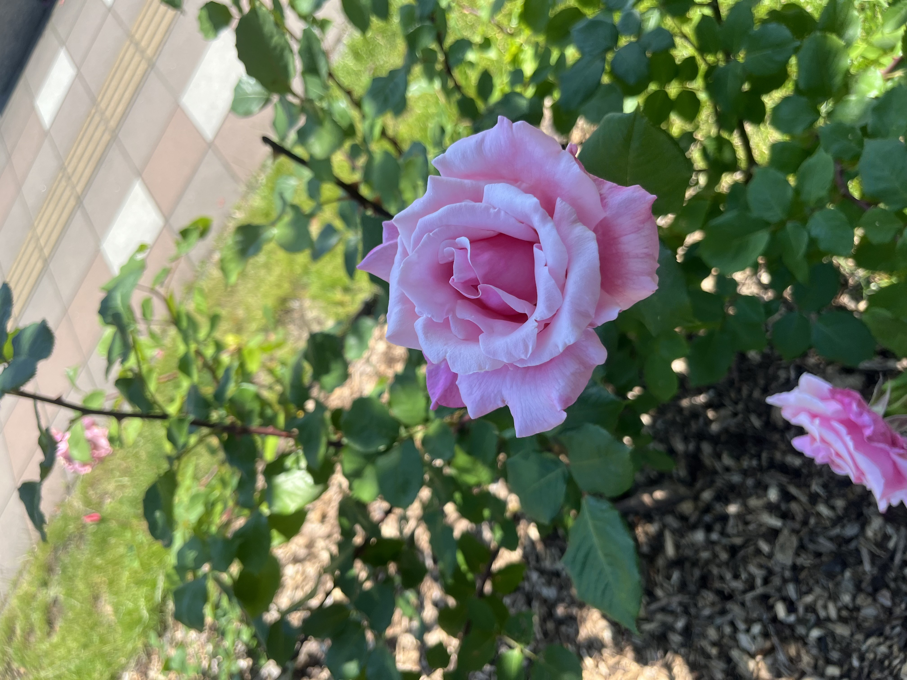
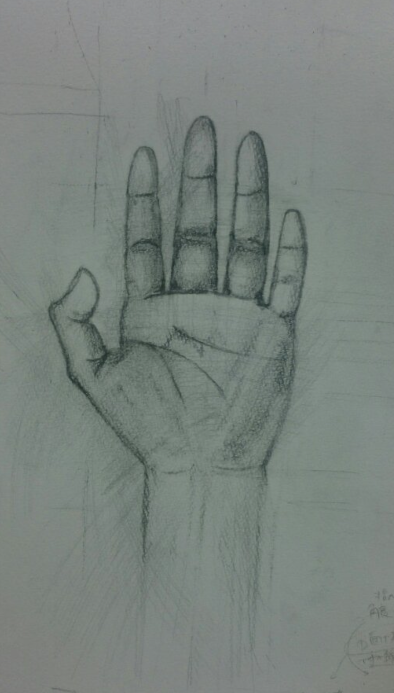
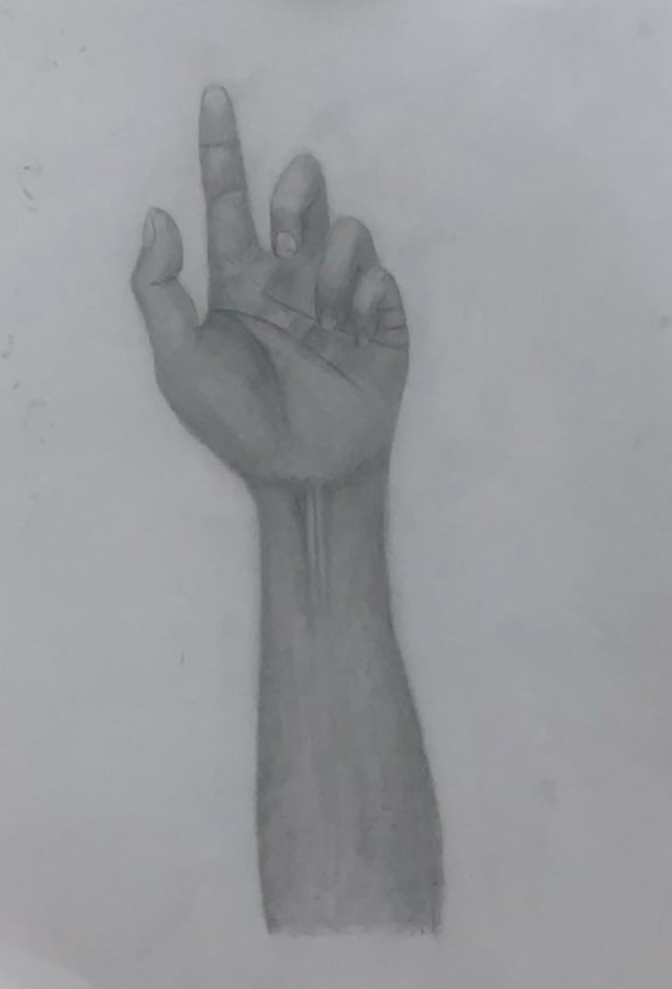

はじめまして、練習でHPを作ってみました

け～ちゃんです
身近なものや風景を観察し 油彩・水彩・鉛筆画を中心に修行しています
技術を磨くだけでなく 「深く観察する」を大切にしながら 日々描き続けています
同じモチーフでも 観察を重ねることで見え方が変化しました

描き始めた頃のデッサン 形を捉えることに集中していました

光や陰影、質感を意識しながら 描けるようになりました
まだまだ修行の途中ですが、 一枚一枚の制作を通して新しい発見を重ねながら 面白いものを目指します
これからも観察することを楽しみながら、 表現の幅を広げていきたいと思っています。